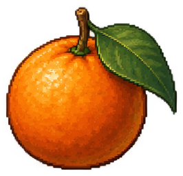
铜果copper_fruitPNG · Godot Atlas
锚点 [133.0, 247]
PNG与AtlasTexture二选一，锚点为裁切后像素。船车灯为配套干净背景的生成替代件。

铜果copper_fruitPNG · Godot Atlas
锚点 [133.0, 247]
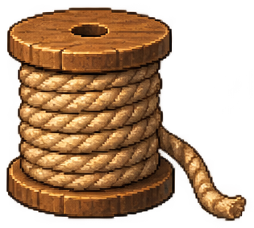
线卷rope_spoolPNG · Godot Atlas
锚点 [157.5, 275]
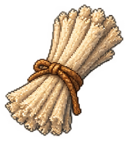
灯芯束wick_bundlePNG · Godot Atlas
锚点 [132.0, 283]
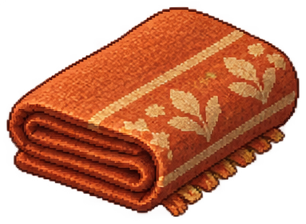
布匹cloth_boltPNG · Godot Atlas
锚点 [191.5, 272]
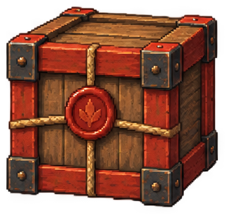
红封箱crate_redPNG · Godot Atlas
锚点 [159.0, 294]
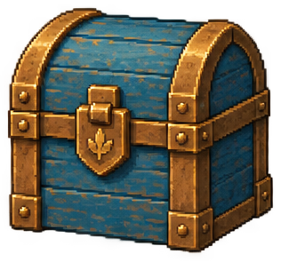
蓝封箱crate_bluePNG · Godot Atlas
锚点 [158.0, 287]
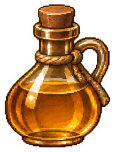
灯油瓶oil_bottlePNG · Godot Atlas
锚点 [116.0, 301]
brass_bellPNG · Godot Atlas
锚点 [128.0, 316]
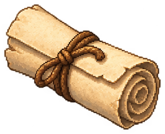
纸卷paper_rollPNG · Godot Atlas
锚点 [169.0, 266]
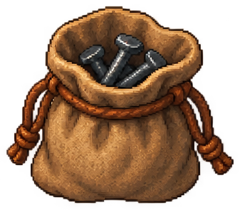
钉袋nail_pouchPNG · Godot Atlas
锚点 [168.5, 287]
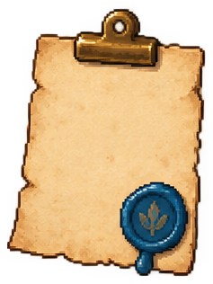
空白回执receipt_blankPNG · Godot Atlas
锚点 [118.5, 308]
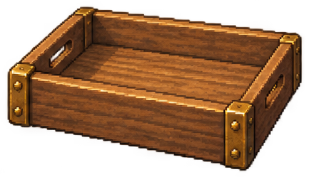
接货托盘receiving_trayPNG · Godot Atlas
锚点 [216.5, 241]
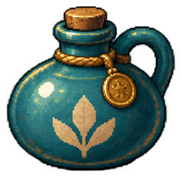
圆封油壶oil_jug_roundPNG · Godot Atlas
锚点 [131.5, 247]
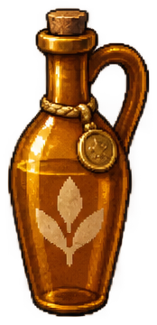
长封油壶oil_jug_tallPNG · Godot Atlas
锚点 [87.0, 352]
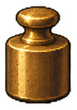
小砝码weight_smallPNG · Godot Atlas
锚点 [64.5, 176]
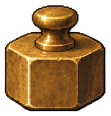
六角砝码weight_hexPNG · Godot Atlas
锚点 [95.5, 191]
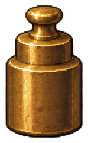
阶梯砝码weight_steppedPNG · Godot Atlas
锚点 [74.5, 233]
scale_panPNG · Godot Atlas
锚点 [120, 32]
scale_beamPNG · Godot Atlas
锚点 [216, 44]
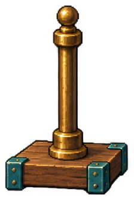
秤座scale_standPNG · Godot Atlas
锚点 [112.0, 326]
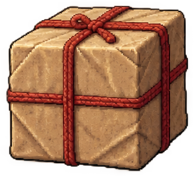
大封包parcel_largePNG · Godot Atlas
锚点 [162.0, 288]
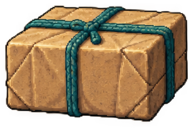
中封包parcel_mediumPNG · Godot Atlas
锚点 [164.0, 210]
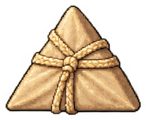
小封包parcel_smallPNG · Godot Atlas
锚点 [120.5, 190]
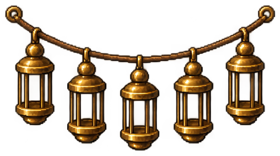
未点亮灯串lantern_stringPNG · Godot Atlas
锚点 [235.5, 255]
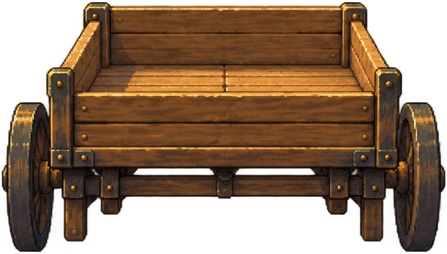
空接货车delivery_cartPNG · Godot Atlas
锚点 [323.5, 366]
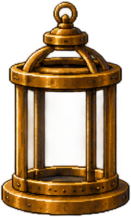
领航灯壳navigation_lanternPNG · Godot Atlas
锚点 [129.0, 426]
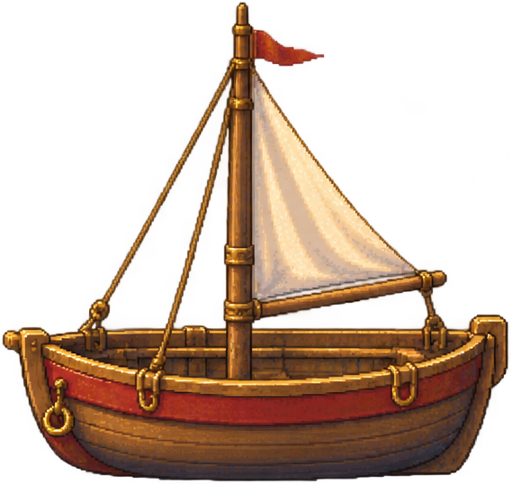
红运输船transport_boat_redPNG · Godot Atlas
锚点 [284.5, 535]
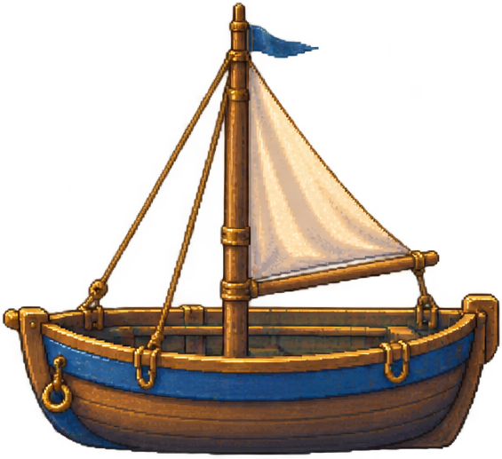
蓝运输船transport_boat_bluePNG · Godot Atlas
锚点 [282.5, 515]